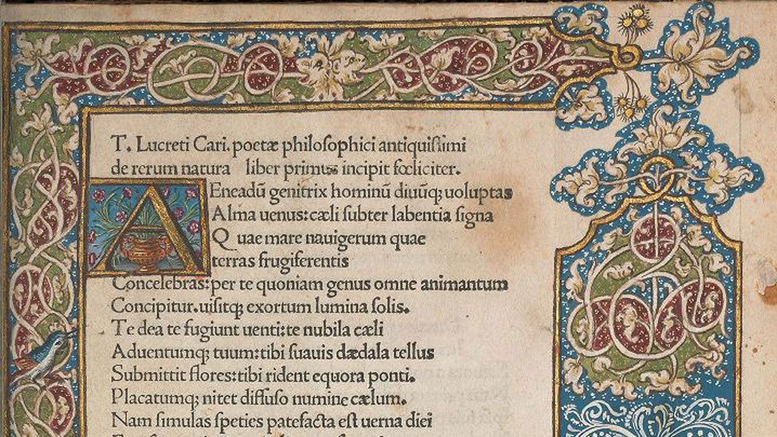
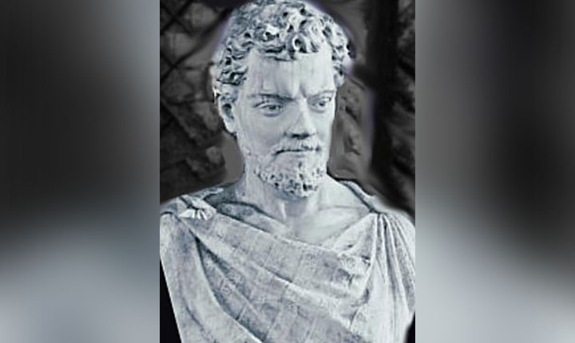

"LA VERDADERA SABIDURÍA ESTA EN RECONOCER LA IGNORANCIA"
El mundo de Papalarva
Epicúreos
De Rerum Natura

El poema de Lucrecio, De Rerum Natura, traducido como " De la Naturaleza", es un caso único en el panorama filosófico antiguo, tanto por su amplitud como por su calidad literaria ya que la obra está escrita en verso y en ella se expone la doctrina de Epicuro, puede considerarse la obra de física más completa de la antigüedad. Un autor actual como es Michel Serres sitúa en esta obra el nacimiento de la física.

Se sabe muy poco de la vida de este poeta, que nació en el año -94 y murió en el -51 o -50. El silencio de los autores antiguos sobre este famoso poeta ha aumentado su leyenda, pero es bastante significativo, ya que era de sobra conocido por Cicerón y otros filósofos. Lo cierto es que lo único que nos ha llegado son las inquietantes palabras de San Jerónimo, que dicen que Lucrecio se volvió loco por culpa de haber ingerido un filtro de amor y que compuso este largo poema en los intervalos de lucidez que le permitía su locura y que finalmente se dio muerte por propia mano. También dice que posteriormente Cicerón corrigió su obra. Si la doctrina de Epicuro era transgresora, la de Lucrecio no lo es menos, y arremete contra toda autoridad romana. Los comentaristas de Lucrecio destacan su carácter apasionado y propenso a la melancolía, que se nota en su obra, se caracteriza como un hombre vehemente y exaltado, pero también pesimista. Esta obra está escrita en verso, en hexámetros, su lectura no es fácil, por lo que puede suponerse que no estaba dirigida al gran público, sino a pequeños grupos aristocráticos e intelectuales. Esta compuesta de 6 libros escritos en latín, que tratan de mostrar las teorías físicas de Epicuro. El primer libro trata de los átomos y del vacío, de que nada nace de la nada y de que todos los seres están formados de átomos. El libro segundo trata del movimiento de los átomos. El tercer libro habla acerca del alma. El cuarto sobre la teoría de la sensación. El quinto sobre el mundo. Y el sexto sobre diversos fenómenos atmosféricos y las enfermedades, terminando con un sombrío panorama sobre los estragos de la peste en Atenas. Lo curioso del caso es que todos los códices que se conservan proceden de un mismo manuscrito probablemente del siglo IV, pero el que se conserva es del siglo IX y está en la Universidad de Leyden, y podría derivar de la biblioteca de Alcuino de York. Los mismos fragmentos que faltan en este texto faltan también en todos los demás, lo que indica su procedencia.